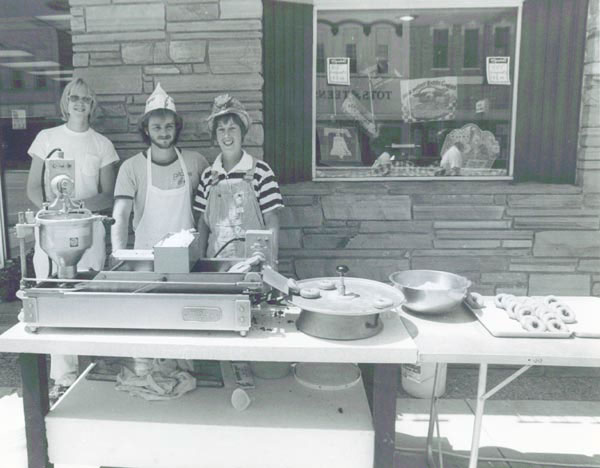

Ridiculous Days
The photo shows how we used to sell donuts out in front of the store for ridiculous days. This small donut machine couldn't always keep up, so in later years we also brought out glazed donuts that were made in the donut room.

Mark, Mark, and Sue with the donut machine. Mid to late 1970s.